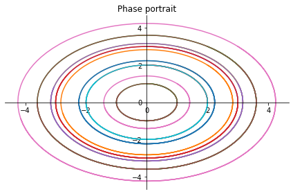
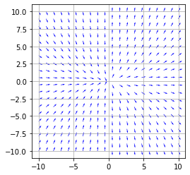
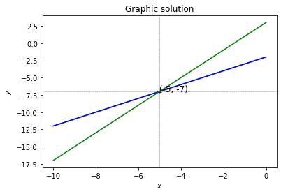

Welcome to limathpy’s documentation!¶
This is a LiMA student package for LiMA students of the Autonomous University of the State of Hidalgo, with the purpose of providing a computational solution to the calculation of problems in different areas of interest for undergraduate students.
Submodules¶
ODE¶
Here we deal with differential equations
- limathpy.ODE.first_ode(vector)¶
A function that returns the general solution of a first order differential equation of the form p(t)y’(t) + q(t)y(t) = g(t); p, q and g are functions which depend on t.
- Args:
vector (list): a list of the form [p(t), q(t), g(t)].
- Returns:
Eq: the general solution of the equation, C1 is a constant which depends on some initial condition.
- Example:
>>> from sympy import symbols >>> from limathpy import first_ode >>> t = symbols('t') >>> first_ode([t, 2, 2 + t]) Eq(y(t), C1/t**2 + t/3 + 1)
- limathpy.ODE.lin_system(matrix, init_cond=[[1, 1], [0, 1]])¶
A function that, given an ordinary differential equations system, returns the linear system for some given initial conditions.
- Args:
matrix (list of two lists): a list of two lists of the form [[t1, t2], [t3, t3]], where you obtain the following system x’(t) = t1*x(t) + t2*y(t); y’(t) = t3*x(t) + t4*y(t). init_cond (list of two lists): a matrix of the form [[t1, t2], [x(t1), y(t2)]], for some t1, t2. Defaults to x(t1 = 1) = 0 and x(t2 = 1) = 1.
- Returns:
tuple: a tuple of the form (Eq_1, Eq_2), with Eq_1 and Eq_2 equations (Eq) with C1 and C2 as variables that are to be found using the initial conditions.
Example: >>> from limathpy import lin_system >>> lin_system([[1, 1], [0, -3]], [[0, 0], [0, 1]]) (Eq(-C1/4 + C2, 0), Eq(C1, 1))
- limathpy.ODE.phase_portrait(matrix, lim_init_cond=2)¶
A function that, given a 2x2 matrix (list of two lists), returns the phase portrait of the associated ordinary differential equations system for some given initial conditions between 0 and the given limit initial condition.
- Args:
matrix (list of two lists): a list of two lists of the form [[t1, t2], [t3, t3]], where you obtain the following system x’(t) = t1*x(t) + t2*y(t); y’(t) = t3*x(t) + t4*y(t). lim_init_cond (int): a number that will be the limit for the initial confitions.
Example: >>> from limathpy import phase_portrait >>> phase_portrait([[0, 1], [-1, 0]], 4)

- limathpy.ODE.second_ode_const(vector)¶
A function that returns the solution of a second order differential equation of the form r(t)y’’(t) + p(t)y’(t) + q(t)y(t) = g(t); r, p, q and g are functions which depend on t.
- Args:
vector (list): a list of the form [r(t), p(t), q(t), g(t)].
- Returns:
Eq: the general solution of the equation, C1 and C2 are constants which depend on some initial conditions.
- Example:
>>> from limathpy import second_ode_const >>> from sympy import symbols >>> t = symbols('t') >>> second_ode_const([t**2, 2*t, 0, 1]) Eq(y(t), C1 + C2/t + log(t))
- limathpy.ODE.slope_field(function, N=10, xi=- 10, xf=10)¶
A function that, given a string, turns it into a function f and returns the slope field of the associated solutions of the differential equation dy/dx = f(x,y).
- Args:
function (string): a string that represents a function f, such as dy/dx = f(x,y). N (int): number of slopes to graph. xi = left and lower limit in the axis. xf = right and upper limit in the axis.
Example: >>> from limathpy import slope_field >>> slope_field(‘2*y/x’, 20, -10, 10)

- limathpy.ODE.solve_2nd_ode(vector, init_cond=[[1, 2], [0, 1]])¶
A function that returns the solution of a second order differential equation of the form r(t)y’’(t) + p(t)y’(t) + q(t)y(t) = g(t) for some given initial conditions; r, p, q and g are functions which depend on t.
- Args:
vector (list): a list of the form [r(t), p(t), q(t), g(t)]. init_cond (list of two lists): a matrix of the form [[t1, t2], [y(t1), y(t2)]], for some t1, t2. Defaults to y(t1 = 1) = 0 and y(t2 = 2) = 1.
- Returns:
Eq: the general solution of the equation, C1 and C2 are constants which depend on some initial conditions.
- Example:
>>> from limathpy import solve_2nd_ode >>> from sympy import symbols >>> t = symbols('t') >>> solve_2nd_ode([t**2, 2*t, 0, 1], [[1, 0], [2, 0]]) Eq(y(t), log(t) - 2*log(2) + 2*log(2)/t)
- limathpy.ODE.solve_first_ode(vector, init_cond=[1, 0])¶
A function that returns the solution of a first order differential equation of the form p(t)y’(t) + q(t)y(t) = g(t) for some given initial conditions; p, q and g are functions which depend on t.
- Args:
vector (list): a list of the form [p(t), q(t), g(t)]. init_cond (list): a list of the form [t1, y(t1)], for some t1. Defaults to y(t1 = 1) = 0.
- Returns:
Eq: the solution of the equation depending on the initial condition.
- Example:
>>> from limathpy import solve_first_ode >>> from sympy import symbols >>> t = symbols('t') >>> solve_first_ode([t, 2, 2 + t], [1, 1]) Eq(y(t), t/3 + 1 - 4/(3*t**2))
- limathpy.ODE.solve_system_ode(matrix, init_cond=[[1, 1], [0, 1]])¶
A function that, given a 2x2 matrix (list of two lists), returns the sotutions of the associated ordinary differential equations system for some given initial conditions.
- Args:
matrix (list of two lists): a list of two lists of the form [[t1, t2], [t3, t3]], where you obtain the following system x’(t) = t1*x(t) + t2*y(t); y’(t) = t3*x(t) + t4*y(t). init_cond (list of two lists): a matrix of the form [[t1, t2], [y(t1), y(t2)]], for some t1, t2. Defaults to y(t1 = 1) = 0 and y(t2 = 2) = 1.
- Returns:
tuple: a tuple of the form (x(t), y(t)), with x(t) and y(t) the general solutions of the system. C1 and C2 are constants that depend on some initial conditions.
Example: >>> from limathpy import solve_system_ode >>> solve_system_ode([[1, -1], [0, 1]], [[0, 1], [1, 1]]) (-t*exp(-1)*exp(t) + exp(t), exp(-1)*exp(t))
- limathpy.ODE.system_ode(matrix)¶
A function that, given a 2x2 matrix (list of two lists), returns the general sotutions of the associated ordinary differential equations system.
- Args:
matrix (list of two lists): a list of two lists of the form [[t1, t2], [t3, t3]], where you obtain the following system x’(t) = t1*x(t) + t2*y(t); y’(t) = t3*x(t) + t4*y(t).
- Returns:
tuple: a tuple of the form (x(t), y(t)), with x(t) and y(t) the general solutions of the system. C1 and C2 are constants that depend on some initial conditions.
Example: >>> from limathpy import system_ode >>> system_ode([[1, 0], [0, -3]]) (C1*exp(t), C2*exp(-3*t))
Calculus¶
Here there are functions to solve calculus problems in one variable
This module contains functions to solve some calculus problems in one variable.
- exception limathpy.Calculus.TestLimitDiverges(message='The quotient limit for this test does not converge.')¶
- limathpy.Calculus.graph_fyd(expression)¶
Function that graphs an expression given as a string and its derivative on the same plane.
- Args:
expression (str): Expression of a function.
- Example:
>>> graph_fyd("x**2")

- limathpy.Calculus.n_derivatives(expr, n=1)¶
Function that returns a list with the n derivates of an expression, with n given.
- Args:
expr: Any sympy function n (int, optional): The number of derivatives required. Defaults to one.
- Returns:
list: the funtion and the indicated derivatives.
- Example:
>>> from sympy import symbols >>> x = symbols('x') >>> n_derivatives(x**4, 4) [x**4, 4*x**3, 12*x**2, 24*x, 24]
- limathpy.Calculus.reverse_func(expression)¶
Function that returns the inverse of a given expression.
- Args:
expression: A sympy function.
- Returns:
list: with the reverse of the function. it can have length greater than 1 due to the domain in which the function is injective.
Example: >>> from sympy import symbols >>> x = symbols(‘x’) >>> reverse_func(x**2) [-sqrt(y), sqrt(y)]
- limathpy.Calculus.revolution_area(expression, lower_bound, upper_bound)¶
Function that calculates the area, over an interval, of a surface of revolution whose axis of rotation is the x or y-axis.
- Args:
expression: A sympy function that generate the surface of revolution. lower_bound: The lower bound of the interval over which the surface of revolution is defined. upper_bound: The upper bound of the interval over which the surface of revolution is defined.
- Returns:
A numerical sympy expression of the area of the surface of revolution on the given interval.
Example: >>> from sympy import symbols >>> x = symbols(‘x’) >>> revolution_area(x**2, 0, 2) pi*(-asinh(4) + 132*sqrt(17))/32
- limathpy.Calculus.root_f(expression, number=0)¶
Function that returns if an expression evaluated to a given number n, is zero.
- Args:
expression (str): Expression of a function. number (optional): The real number at which the function is evaluated. Defaults to zero.
- Returns:
bool: True if the given number is the root of the function, False otherwise.
- Example:
>>> root_f("x**2", 0) True
- limathpy.Calculus.seq_converg(expression)¶
Function that determines whether a sequence converges to zero or diverges using the quotient limit test.
The limit of \(a_{n+1}/a_n\) is considered, for a sequence \((a_n)_{n \in \mathbb{N}}\) of positive real numbers.
- Args:
expression: A sympy function in terms of n.
- Returns:
Message: Indicates if the sequence converges to zero, diverges or nothing can be said about it.
Example: >>> from sympy import symbols >>> n = symbols(‘n’) >>> seq_converg(1/2**n) ‘The sequence 2**(-n) converges to zero.’
- limathpy.Calculus.seri_converg(expression)¶
Function that determines whether a serie from 1 to infinity converges or diverges using the quotient limit test.
The limit of \(a_{n+1}/a_n\) is considered, for a sequence \((a_n)_{n \in \mathbb{N}}\).
- Args:
expression: A sympy function in terms of n.
- Returns:
Message: Indicates if the serie from 1 to infinity converges, diverges or nothing can be said about it.
Example: >>> from sympy import symbols >>> n = symbols(‘n’) >>> seri_converg(1/2**n) ‘The infinite series of the sequence 2**(-n) converges.’
- limathpy.Calculus.tangent_line(expression, x_0)¶
Function that gives the equation of a tangent line to a function about a given point.
- Args:
expression (str): Expression of a function. x_0: Value of the x coordinate for the point of tangency of the line.
- Returns:
A sympy equation of the tangent line to the function through the given point.
- Example:
>>> tangent_line("x**2", 1) Eq(y, 2*x - 1)
LinearAlgebra¶
Here there are functions to solve linear algebra problems
This is the Linear Algebra module. He we have some useful functions.
- exception limathpy.LinearAlgebra.NoInvertible¶
Exception to raise when argument funtion is not a invertible square Sympy Matrix.
- limathpy.LinearAlgebra.change_basis(base1, base2)¶
Change of basis matrix, a matrix that translates vector representations from one basis, such as the standard coordinate system, to another basis.
- Args:
base1 (matriz): Sympy matrix as a representation of a base base2 (matriz): Sympy matrix as a representation of a base.
- Returns:
matrix: Change of basis matrix from base1 to base2
- Example:
>>> # If we want the base change matrix from B1={(3, 1), (2, -1)} >>> # to B2={(2, 4), (-5, 3)} we use the matrix representations >>> # of each base as in this example >>> import sympy as sp >>> B1 = sp.Matrix([[3, 2], [1, -1]]) >>> B2 = sp.Matrix([[2, -5], [4, 3]]) >>> B1, B2, change_basis(B1, B2) (Matrix([ [3, 2], [1, -1]]), Matrix([ [2, -5], [4, 3]]), Matrix([ [ 7/13, 1/26], [-5/13, -5/13]]))
- limathpy.LinearAlgebra.descomposition_AyS(matrix)¶
Decomposition of a matrix as the sum of a symmetric matrix and an antisymmetric matrix.
- Args:
matrix (Matriz): square sympy Matrix.
- Returns:
tuple: two sympy matrices such that when added they result in the given matrix.
- Example:
>>> import sympy as sp >>> descomposition_AyS(sp.Matrix([[1, 5], [-3, 2]])) The matrix Matrix([[1, 5], [-3, 2]]) is the sum of the following symmetric and antisymmetric matrices: (Matrix([ [1.0, 1.0], [1.0, 2.0]]), Matrix([ [ 0, 4.0], [-4.0, 0]]))
- limathpy.LinearAlgebra.graph_solution(expr1, expr2, color1='blue', color2='green')¶
Graphical Solution to a 2 x 2 System of Equations.
This function produces images such as:
- Args:
expr1 (expression): equation expressed in terms of \(x\) expr2 (expression): equation expressed in terms of \(x\) color1 (string): The color of the line that represents the first equation The default value is ‘blue’. color2 (string): The color of the line that represents the first equation The default value is ‘blue’.
- Example:
>>> import sympy as sp >>> import numpy as np >>> import matplotlib.pyplot as plt >>> x, y = sp.symbols('x y') >>> expr1 = x - 2 >>> expr2 = 2*x +3 >>> graph_solution(expr1, expr2)
- limathpy.LinearAlgebra.inner_product(vector1, vector2)¶
Inner product.
- Args:
vector1 (matrix): Sympy matrix 2x1 vector1 (matrix): Sympy matrix 2x1.
- Returns:
(float): usual inner product in \(\mathbb{R}^n\)
- Example:
>>> import sympy as sp >>> v1=sp.Matrix([0, 1]) >>> v2=sp.Matrix([1, 2]) >>> inner_product(v1, v2) 2.0
- limathpy.LinearAlgebra.int_eigenvalues(matriz)¶
Examine if the eigenvalues are integers
- Args:
matriz (matrix) = square sympy Matrix.
- Returns:
string: ‘The matrix has all its integer eigenvalues’ or ‘The matrix has not all its integer eigenvalues.’
- Examples:
>>> import sympy as sp >>> int_eigenvalues(sp.Matrix([[1, 2], [1, 3]])) The Matrix([[1, 2], [1, 3]]) has not all its integer eigenvalues
- limathpy.LinearAlgebra.int_eigvals_n(n)¶
Values of n for which [[1, n], [1, 1]] has integer eigenvalues.
- Args:
n (int): the element (1, 2) of the matrix.
- Returns:
list: A list with the values between 0 and n for which [[1, n], [1, 1]] has positive eigenvalues.
- Examples:
>>> import sympy as sp >>> int_eigvals_n(100) [0, 1, 4, 9, 16, 25, 36, 49, 64, 81, 100]
- limathpy.LinearAlgebra.integers_list(lista)¶
Integers in a list.
- Args:
lista (list): any list
- Returns:
string: ‘True’ if all values in the given list are integers or ‘False’ in other case.
- Examples:
>>> integers_list([1, 3, 0.5]) False
- limathpy.LinearAlgebra.matrix_n(matriz, n)¶
Powers of a matrix.
- Args:
matriz: matrix of sympy n (int): the power.
- Returns:
list: List of n powers of a given matrix.
- Examples:
>>> import sympy as sp >>> matrix_n(sp.Matrix([[1, 2], [3, 4]]), 2) [Matrix([ [1, 2], [3, 4]]), Matrix([ [ 7, 10], [15, 22]])]
- limathpy.LinearAlgebra.orthogonal(matrix)¶
Orthogonality of a square matrix, by definition it should be invertible
- Args:
matrix (Matrix): A square Sympy matrix.
- Returns:
string: ‘{matrix} is a orthogonal matrix’ or ‘{matrix} is not a orthogonal matrix’ according to the case.
- Raises:
KeyError: singular matrix.
- Example:
>>> import sympy as sp >>> orthogonal(sp.Matrix([[0, 1], [-1, 0]])) Matrix([[0, 1], [-1, 0]]) is a orthogonal matrix
- limathpy.LinearAlgebra.plane_3points(p1, p2, p3)¶
Equation of a plane passing through 3 points.
- Args:
p1 (list): point in form a list p2 (list): point in form a list. p3 (list): point in form a list.
- Returns:
A sympy equation of the plane passing through its 3 points.
- Example:
>>> import sympy as sp >>> p1 = [1, 2, -3] >>> p2 = [2, 3, 1] >>> p3 = [0,-2, -1] >>> plane_3points(p1, p2, p3) Eq(18*x - 6*y - 3*z - 15, 0)
MathematicalModels¶
Here there are functions to solve mathematical models problems
- limathpy.MathematicalModels.diagram(par, x0, it)¶
A function that, returns a spiderweb diagram of some function.
- Args:
par: is a simple structured text parser project x0: initial condition it: number of steps
Example: >>> from matplotlib import pyplot as plt >>> from celluloid import Camera >>> from IPython.display import HTML >>> import numpy as np >>> from limathpy import diagram >>> anim = diagram(3.8, 0.1, 200) >>> HTML(anim.to_html5_video())
- limathpy.MathematicalModels.fibonacci(n)¶
A function that, returns the n-th Fibonacci number
- Args:
n (int): the integer number
Example: >>> from limathpy import fibonacci >>> [fibonacci(n) for n in range(1, 20)] [0, 1, 1, 2, 3, 5, 8, 13, 21, 34, 55, 89, 144, 233, 377, 610, 987, 1597, 2584]
- limathpy.MathematicalModels.rungekutta2_fg(f, g, t0, x0, y0, h, samples)¶
- A function that, returns a system of ordinary differential equations with 2nd Order Runge Kutta.
- Args:
f: first differential equation g: second differential equation t0: initial condition of the observation time x0: initial condition of the number of dams y0: initial condition of the number of predators h: algorithm parameter samples (int):total number of samples
Example: >>> import numpy as np >>> from limathpy import rungekutta2_fg >>> a = 0.5 >>> b = 0.7 >>> c = 0.35 >>> d = 0.35 >>> f = lambda t, x, y: a*x - b*x*y >>> g = lambda t, x, y: - c*y + d*x*y >>> t0 = 0 >>> x0 = 2 >>> y0 = 1 >>> h = 0.5 >>> samples = 101 >>> rungekutta2_fg(f, g, t0, x0, y0, h, samples) [ ti, xi, yi]
- array([[ 0. , 2. , 1. ],
[ 0.5 , 1.754875, 1.16975 ], [ 1. , 1.457533, 1.302069], [ 1.5 , 1.167405, 1.373599], [ 2. , 0.922773, 1.381103], [ 2.5 , 0.734853, 1.33689 ], [ 3. , 0.598406, 1.258434], [ 3.5 , 0.502789, 1.161433], [ 4. , 0.43776 , 1.05747 ], [ 4.5 , 0.39535 , 0.954156], [ 5. , 0.36995 , 0.856056], [ 5.5 , 0.357857, 0.765649], [ 6. , 0.356772, 0.684061], [ 6.5 , 0.365425, 0.611594], [ 7. , 0.383295, 0.548072], [ 7.5 , 0.41044 , 0.493068], [ 8. , 0.447386, 0.446051], [ 8.5 , 0.495053, 0.406481], [ 9. , 0.554706, 0.373878], [ 9.5 , 0.627897, 0.347872], [10. , 0.716394, 0.328248], [10.5 , 0.822045, 0.315003], [11. , 0.946561, 0.308414], [11.5 , 1.091121, 0.309138], [12. , 1.255739, 0.318359], [12.5 , 1.438245, 0.33799 ], [13. , 1.632757, 0.370937], [13.5 , 1.827612, 0.421359], [14. , 2.003072, 0.494714], [14.5 , 2.130143, 0.59701 ], [15. , 2.173551, 0.73223 ], [15.5 , 2.103102, 0.896997], [16. , 1.913257, 1.074276], [16.5 , 1.637137, 1.233405], [17. , 1.334464, 1.342914], [17.5 , 1.058838, 1.387297], [18. , 0.836776, 1.371067], [18.5 , 0.670949, 1.310046], [19. , 0.552642, 1.221667], [19.5 , 0.470823, 1.1201 ], [20. , 0.416031, 1.015227], [20.5 , 0.381277, 0.913283], [21. , 0.361785, 0.817857], [21.5 , 0.354481, 0.73078 ], [22. , 0.357532, 0.652774], [22.5 , 0.370003, 0.583897], [23. , 0.391633, 0.523839], [23.5 , 0.422684, 0.472107], [24. , 0.463858, 0.42815 ], [24.5 , 0.516226, 0.39144 ], [25. , 0.581185, 0.361532], [25.5 , 0.660398, 0.338109], [26. , 0.755699, 0.321032], [26.5 , 0.868935, 0.310397], [27. , 1.001686, 0.306619], [27.5 , 1.154789, 0.310545], [28. , 1.32756 , 0.323625], [28.5 , 1.51659 , 0.348143], [29. , 1.71397 , 0.387494], [29.5 , 1.905037, 0.446412], [30. , 2.066237, 0.530796], [30.5 , 2.165082, 0.646391], [31. , 2.166022, 0.795122], [31.5 , 2.045845, 0.96879 ], [32. , 1.813899, 1.144051], [32.5 , 1.517631, 1.287402], [33. , 1.218981, 1.371905], [33.5 , 0.962067, 1.390516], [34. , 0.762497, 1.353795], [34.5 , 0.616756, 1.27932 ], [35. , 0.514275, 1.183658], [35.5 , 0.444297, 1.079315], [36. , 0.398278, 0.974618], [36.5 , 0.370143, 0.874624], [37. , 0.355848, 0.782117], [37.5 , 0.35286 , 0.698408], [38. , 0.359738, 0.623899], [38.5 , 0.375838, 0.558461], [39. , 0.401126, 0.501685], [39.5 , 0.43605 , 0.453035], [40. , 0.481468, 0.411955], [40.5 , 0.538593, 0.377939], [41. , 0.608944, 0.350582], [41.5 , 0.694276, 0.329626], [42. , 0.79647 , 0.315014], [42.5 , 0.917333, 0.306952], [43. , 1.058251, 0.306005], [43.5 , 1.219617, 0.313231], [44. , 1.399899, 0.330373], [44.5 , 1.594216, 0.36012 ], [45. , 1.792337, 0.40639 ], [45.5 , 1.976313, 0.474467], [46. , 2.11877 , 0.570521], [46.5 , 2.184563, 0.699518], [47. , 2.14016 , 0.860392], [47.5 , 1.972509, 1.039308], [48. , 1.706772, 1.20736 ], [48.5 , 1.400735, 1.330961], [49. , 1.11309 , 1.389894], [49.5 , 0.876914, 1.38503 ], [50. , 0.698717, 1.331107], [50.5 , 0.570884, 1.246132]])
CalculusOfSeveralVariables¶
Here there are functions to solve calculus of several variables problems
- limathpy.CalculusOfSeveralVariables.divergence(expr, var)¶
Function that returns the Divergence of a given vector field.
- Args:
expr: Any list of sympy functions. var: List of variables in order.
- Returns:
list: with the reverse of the function.
- Example:
>>> from sympy import symbols >>> x = symbols('x') >>> y = symbols('y') >>> divergence([sp.cos(x*2) + y, x + 2*y**4], [x, y]) 8*y**3 - 2*sin(2*x)
- limathpy.CalculusOfSeveralVariables.gradient(expr, var)¶
- Function that returns a list representing the function and
the gradient of the given function.
- Args:
expr: Any sympy function. var: List of variables in order.
- Returns:
list: with the reverse of the function.
- Example:
>>> from sympy import symbols >>> x = symbols('x') >>> y = symbols('y') >>> z = symbols('z') >>> gradient(x*sp.cos(3*z)**2 + sp.sin(y), [x, y, z]) [x*cos(3*z)**2 + sin(y), cos(3*z)**2, cos(y), -6*x*sin(3*z)*cos(3*z)]
- limathpy.CalculusOfSeveralVariables.hessian(function, var)¶
- Function that returns a matrix that represents the Hessian
matrix of the given coordinate functions.
- Args:
function: Any list of sympy functions. var: List of variables in order.
- Returns:
list: with the reverse of the function.
- Example:
>>> from sympy import symbols >>> x = symbols('x') >>> y = symbols('y') >>> z = symbols('z') >>> hessian([x*y*z, x*sp.cos(y) -z, x*y*sp.sin(z)], [x, y, z]) Matrix([ [0, 0, 0], [0, -x*cos(y), 0], [0, 0, -x*y*sin(z)]])
- limathpy.CalculusOfSeveralVariables.jacobian(function, var)¶
- Function that returns a matrix that represents the Jacobian
matrix of the given coordinate functions.
- Args:
function: Any list of sympy functions. var: List of variables in order.
- Returns:
list: with the reverse of the function.
- Example:
>>> from sympy import symbols >>> x = symbols('x') >>> y = symbols('y') >>> z = symbols('z') >>> jacobian([x*y*z, x**2 + y**2, sp.sin(x*y*z)], [x, y, z]) Matrix([ [ y*z, x*z, x*y], [ 2*x, 2*y, 0], [y*z*cos(x*y*z), x*z*cos(x*y*z), x*y*cos(x*y*z)]])
- limathpy.CalculusOfSeveralVariables.laplacian(expr, var)¶
- Function that returns the Laplacian of a function of several
variables.
- Args:
expr: Any sympy function. var: List of variables in order.
- Returns:
list: with the reverse of the function.
- Example:
>>> from sympy import symbols >>> x = symbols('x') >>> y = symbols('y') >>> z = symbols('z') >>> laplacian(2*x*y + y**3 - sp.cos(z), [x, y, z]) 6*y + cos(z)
- limathpy.CalculusOfSeveralVariables.partial_derivate(expr, var)¶
- Function that returns a sympy expression that represents the
partial derivative of the given function.
- Args:
expr: Any sympy function. var: Variable with respect to whict it is derived.
- Returns:
list: with the reverse of the function.
- Example:
>>> from sympy import symbols >>> x = symbols('x') >>> y = symbols('y') >>> z = symbols('z') >>> partial_derivate(5*x*y - x*sp.cos(z) + z**8*y, y) 5*x + z**8